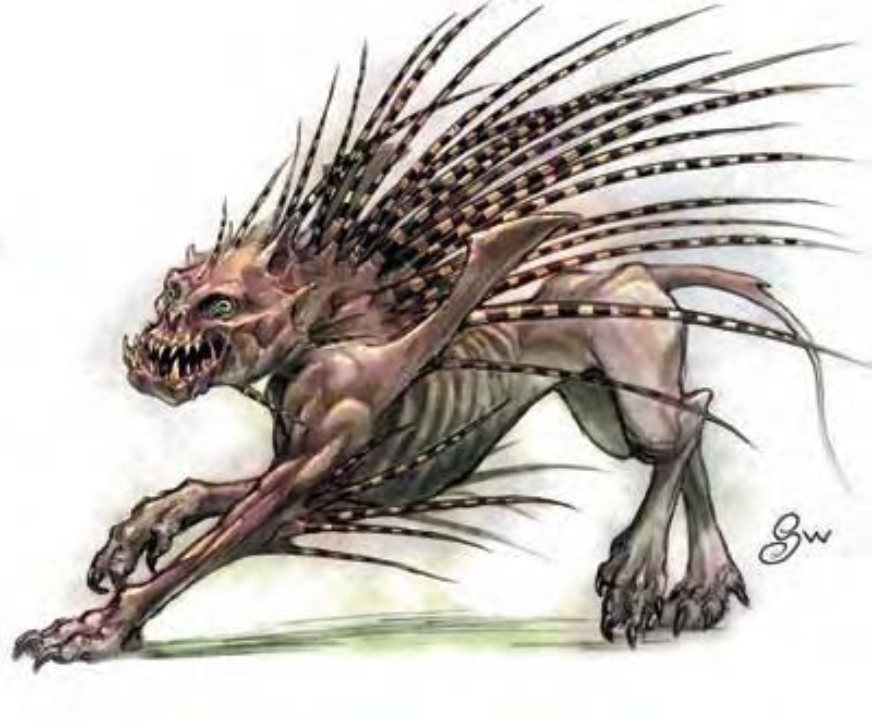

| 资料栏位 | 嚎兽 (Howler) 大型异界生物 (混乱、邪恶、异界) |
| 生命骰 | 6d8+12 (39HP) |
| 先攻 | +7 |
| 速度 | 60英尺 (12格) |
| 防御等级 | 17 (-1体型、+3敏捷、+5天生)、接触12、措手不及14 |
| 基本攻击/擒抱 | +6 / +15 |
| 攻击 | 啮咬+10近战 (2d8+5) |
| 全力攻击 | 啮咬+10近战 (2d8+5) 及1d4硬刺+5近战 (1d6+2) |
| 占据/触及 | 10英尺 / 5英尺 |
| 特殊攻击 | 硬刺、嚎叫 |
| 特殊能力 | 黑暗视觉60英尺 |
| 豁免 | 强韧+7、反射+8、意志+7 |
| 属性 | 力量21、敏捷17、体质15、智力6、感知14、魅力8 |
| 技能 | 攀爬+14、躲藏+8、聆听+13、潜行+12、搜索+7、侦察+13、生存+2 (追踪+4) |
| 专长 | 警觉、战斗反射、精通先攻 |
| 环境 | 地籁风深域 |
| 组织 | 单独、成队 (2-4) 或一批 (6-10) |
| 挑战级数 | 3 |
| 宝藏 | 无 |
| 阵营 | 总是混乱邪恶 |
| 进化 | 7-9HD (大型)；11-18HD (超大型) |
| 等级修正值 | +3 (部属) |
这种生物看起来像是枯瘦、凶残的猎犬或猫科动物，鬃毛是竖立的硬刺。
嚎兽居住在各个被混乱与邪恶支配的界域，最早则源于地籁风深域。嚎兽成群结队地狩猎，在洞穴间追逐猎物，使其筋疲力尽后再撕扯成碎片。
嚎兽身长8英尺，体重约2000磅。
令人意外的是嚎兽具有智慧，却不说话，他们只会嚎叫。即使真的如某些人所言在嚎叫中包含了语言，那这种语言连法术也无法解读出来。嚎兽能理解深渊语。
战斗因为他们懦弱又残酷，嚎兽以集团作战。他们偏好用冲刺进入、接着马上冲出战场准备再度冲刺。
在计算伤害减免时，嚎兽的天生武器与持有武器都视为混乱阵营与邪恶阵营。
硬刺 (特异)：嚎兽的颈部竖立着长长的硬刺。啮咬时嚎兽会以1d4根硬刺攻击对手。遭受硬刺攻击者必须通过反射检定 (DC=16)，否则会被刺中。每根刺入的硬刺会使攻击、豁免等所有检定都受到-1减值。豁免检定DC的调整值与敏捷调整值相同。
通过“医疗”检定 (DC=20) 就可以安全拔除硬刺，否则每拔除一根硬刺将额外遭受1d6点伤害。
嚎叫 (特异)：除了异界生物，所有听到嚎兽嚎叫一小时以上的生物都会受到影响，但这并不会使嚎兽获得战斗时的优势。所有听到嚎叫一小时以上的生物必须通过意志检定 (DC=12)，否则将受到1点的感知伤害。豁免检定DC的调整值与魅力调整值相同。每多听一小时就必须再多做一次豁免检定。此为音波、影响心灵的效果。
夸塞魔、深渊兽人或魅魔等小型或中型炼狱生物有时会以嚎兽作为座骑或驼兽。更强大的恶魔则把他们当成猎犬使用。
虽然具有智慧，嚎兽仍需受训才能载人战斗。嚎兽对训练者的态度必须为友善 (可通过“交涉”检定达成)，才能进行训练。训练友善的嚎兽需时六周，并须通过“驯养动物”检定 (DC=25)。骑嚎兽需使用特别鞍座。嚎兽可背负骑师进行攻击，但骑师若未通过“骑术”检定，则无法同时战斗。
负重能力：轻度负荷为460磅、中度负荷461-920磅、重度负荷921-1380磅。嚎兽可以拖曳最多6900磅的重物。